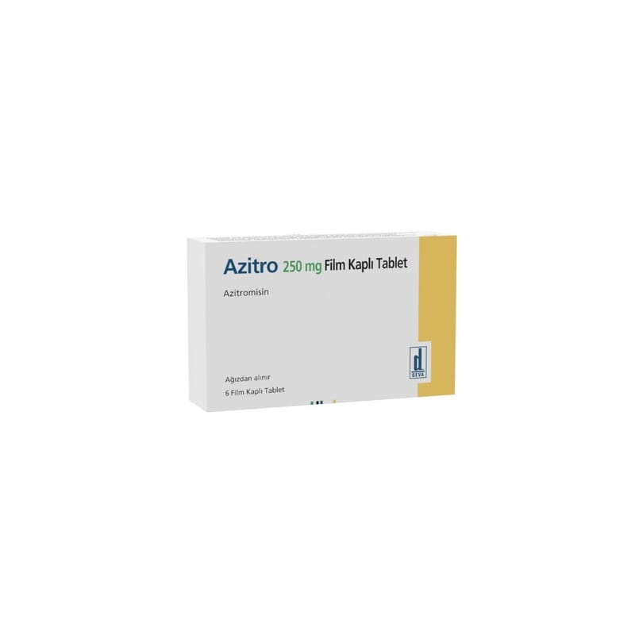

Azitro 250 mg Film Kaplı Tablet, 6 Adet

Ne için kullanılır
KT · Bölüm 1AZİTRO 250 mg film kaplı tablettir. 6 tabletlik ambalajlarda bulunur, her bir tablet 250 mg azitromisine eşdeğer 262,016 mg azitromisin dihidrat içermektedir. AZİTRO, bir yüzü “AZİTRO” yazılı, kokusuz, homojen görünüşlü, beyaz renkte film kaplı oblong tablettir.
AZİTRO, makrolid olarak adlandırılan antibiyotik grubundandır. Bazı bakterilerin ve diğer mikroorganizmaların neden olduğu, aşağıda örnekleri bulunan enfeksiyonların tedavisinde kullanılır: Göğüs, boğaz ve burun enfeksiyonları (bronş iltihabı, akciğer iltihabı ve sinüzit gibi) Streptococcus pyogenes’in neden olduğu bademcik iltihabı (tonsilit), boğaz ağrısı (farenjit) tedavisinde penisilin alerjisi varlığında Kulak enfeksiyonları Deri ve yumuşak doku enfeksiyonları (apse veya çıban gibi)
Chlamydia adlı organizmanın neden olduğu cinsel yolla bulaşan hastalıklar Haemophilus ducreyi isimli bir mikroorganizmanın neden olduğu yumuşak doku ülseri ve çoğul dirençli olmayan Neisseria gonorrhoeae isimli bir mikroorganizmanın yol açtığı eşlik eden başka enfeksiyonun olmadığı cinsel yolla bulaşan enfeksiyonlar